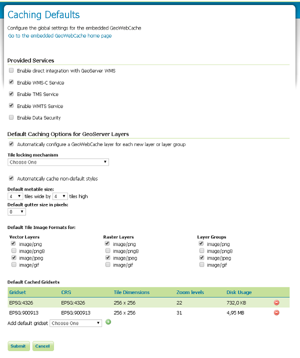

Introduction to GeoWebCache¶
The GeoWebCache Settings page, in the Server menu in the Geoserver web interface, shows some configuration options for GeoWebCache, a tile server that comes embedded by default inside GeoServer.
Navigate to the GeoServer Welcome Page.
Click on GeoWebCache link located in the Settings section (Caching Defaults).
Next, you will see the results of GeoWebCache Settings page.

Enable direct WMS integration¶
GeoWebCache acts as a proxy between GeoServer and map client. By default, GeoWebCache has a separate endpoint from the GeoServer WMS.
However, often clients are set up to make a tiled request to the GeoServer WMS, and those tiles often happen to match a well recognized tile hierarchy (the Google/OpenStreetMap one for example). Enabling direct WMS integration allows WMS requests that match a tiling structure recognized by GWC to be cached and served by GWC directly, thus speeding up the requests.
Default caching options¶
The default caching options influence how GeoWebCache caches the layers that are being configured in GeoServer. In GeoServer 2.1.x series the configuration applies to all layers, from the 2.2.x and above series it’s also possible to customize the settings on a per layer basis.
The meta tiling factor influences what kind of WMS request GWC uses to build the tile cache (by default, a 4x4 block that is then sliced). The gutter adds a number of extra row/column of pixels in the WMS request to make sure the tile do not get cut/partial symbols (in GeoServer this is often unnecessary, but might become critical if the size of a symbol is attribute driven and thus cannot be determined by inspecting the SLD only).
The formats being cached influence what GWC is actually going to cache on disk and serve.
Disk quota¶
This section manages the disk usage for tiles saved with GeoWebCache.
By default, disk usage with GeoWebCache is unbounded, regardless of integration with the GeoServer WMS, so every tile served from GeoWebCache will be stored in the cache directory (typically the gwc directory inside the data directory). Setting a disk quota allows disk usage to be constrained, which might be critical when serving large areas that would result in several terabytes worth of tile cache on disk.
| Option | Default value | Description |
|---|---|---|
| Enable Disk Quota limits | Off | Turns on the disk quota. When disabled, the cache directory will grow unbounded. When enabled, the disk quota will be set according to the options below. |
| Compute cache usage based on a disk block size of | 4096 bytes | This field should be set equal to the disk block size of the storage medium where the cache is located. |
| Check if the cache disk quota is exceeded every | 10 seconds | Time interval at which the cache is polled. Smaller values (more frequent polling) will slightly increase disk activity, but larger values (less frequent polling) might cause the disk quota to be temporarily exceeded. |
| Set maximum tile cache size | 100 MiB (Megabytes) | The maximum size for the cache. When this value is exceeded and the cache is polled, tiles will be removed according to the policy choice listed below. Note that the unit options are megabytes (approx. 1.05MB), gigabytes (approx. 1.07GB), and terabytes (approx. 1.10TB). |
| When forcing disk quota limits, remove first tiles that are | Least Frequently Used | Sets the policy for tile removal when the disk quota is exceeded. Options are Least Frequently Used (removes tiles based on how often the tile was accessed) or Least Recently Used (removes tiles based on date of last access). |
| Disk quota store type | In process database (H2) | By default using H2 database to store disk quotas, this options allows to configure also an external DB (useful for clustered systems). Options are In process database (H2) (uses a local H2 db on filesystem) or External database (uses an external DBMS). |
Note
It is not currently possible to set a disk quota for the entire GeoWebCache storage system. It is also not possible to mix LFU and LRU on a single layer. See the GeoWebCache documentation for more about disk quotas.
When finished making changes, click Submit.
This section also shows how much disk space is being used compared to the disk quota size, as well as the last time (if any) the quota was reached.
Links¶
On top of the Caching Defaults page there is a link to the embedded GWC homepage (containing runtime statistics and status updates)
The link above allows to access the integrated GWC home page directly
Tile layers¶
This section allows to manage the cached layers published by the integrated GeoWebCache:
The Tile Layers page is where you can view configured layers, reload the configuration (when changing settings or adding new layers), and seed/refresh the existing cache on a per-layer basis.
In the Tile Layers page scroll down to visualize the boulder layer and select the EPSG:900913 / png from the Preview combobox

Zoom In on the map and after zoom out in order to check the responsively of the layer rendering.
From this page is also possible to directly access the layer configuration, check the available disk quota (if present) and the tiles dimension, but also manage the cache seeding.
In the Tile Layers page, scroll down to visualize the boulder layer and select the seed/truncate link in order to directly access to the GWC seeding form.
Try to seed/reseed some zoom levels. As an example, try same parameters values as shown in following image (no more than level 9 for the exercise otherwise it will take too much time)
Check back from the Tile Layers page that the dimension of the tiles has changed
Warning
You will see the updated tile dimension ONLY when the Disk Quota is enabled, always 0B will be displayed instead. In that case just check directly the GWC data dir.
Viewing¶
To view the GeoWebCache demo page, append /gwc/demo to the address of your GeoServer instance. For example, if your GeoServer is at the following address:
http://localhost:8083/geoserver
The GeoWebCache demo page is accessible here:
http://localhost:8083/geoserver/gwc/demo
GeoWebCache endpoint URL¶
When not using direct integration, you can point your client directly to GeoWebCache.
Warning
GeoWebCache is not a true WMS and so the following explanation is an oversimplification.
To direct your client to GeoWebCache (and thus receive cached tiles) you need to change the WMS URL.
If your application requests WMS tiles from GeoServer at this URL:
http://example.com/geoserver/wms
Then, you can invoke the GeoWebCache WMS instead at this URL:
http://example.com/geoserver/gwc/service/wms
In other words, add /gwc/service/wms in between the path to your GeoServer instance and the WMS call.
As soon as tiles are requested through GeoWebCache, it automatically starts saving them. This means that initial requests for tiles will not be accelerated since GeoServer will still need to generate the tiles. To automate this process of requesting tiles, you can seed the cache.